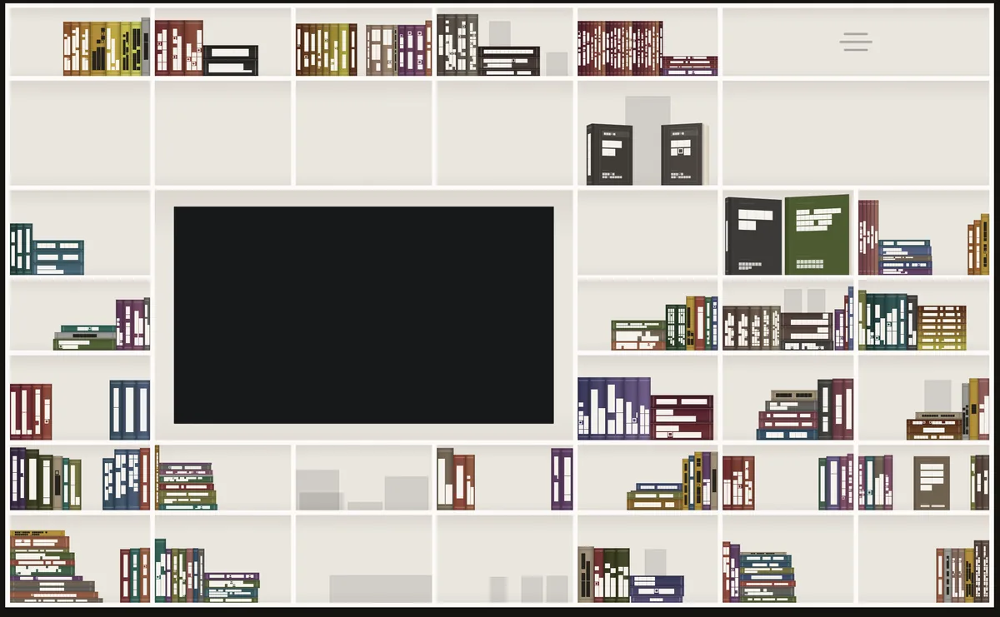
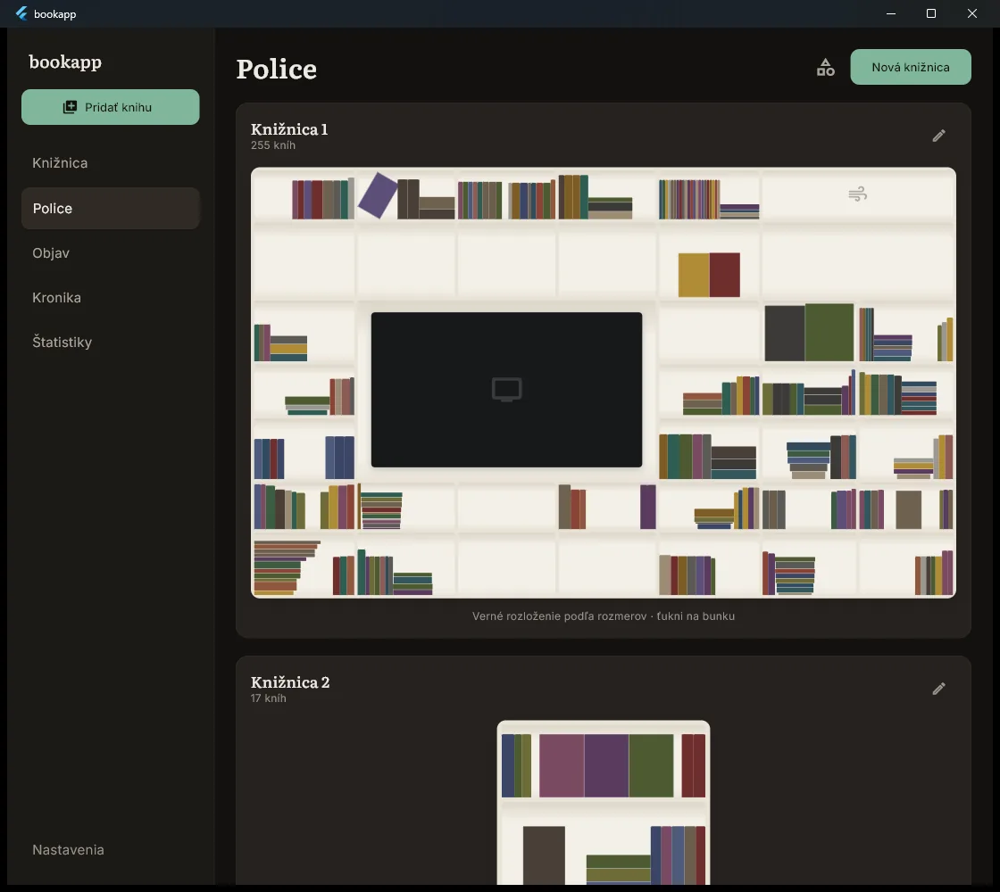
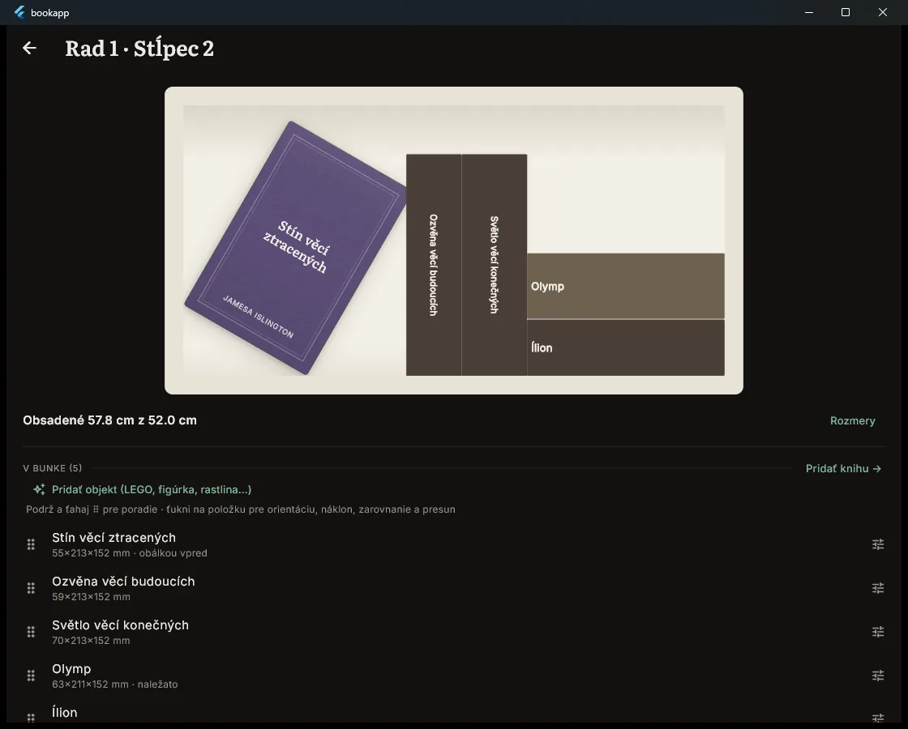
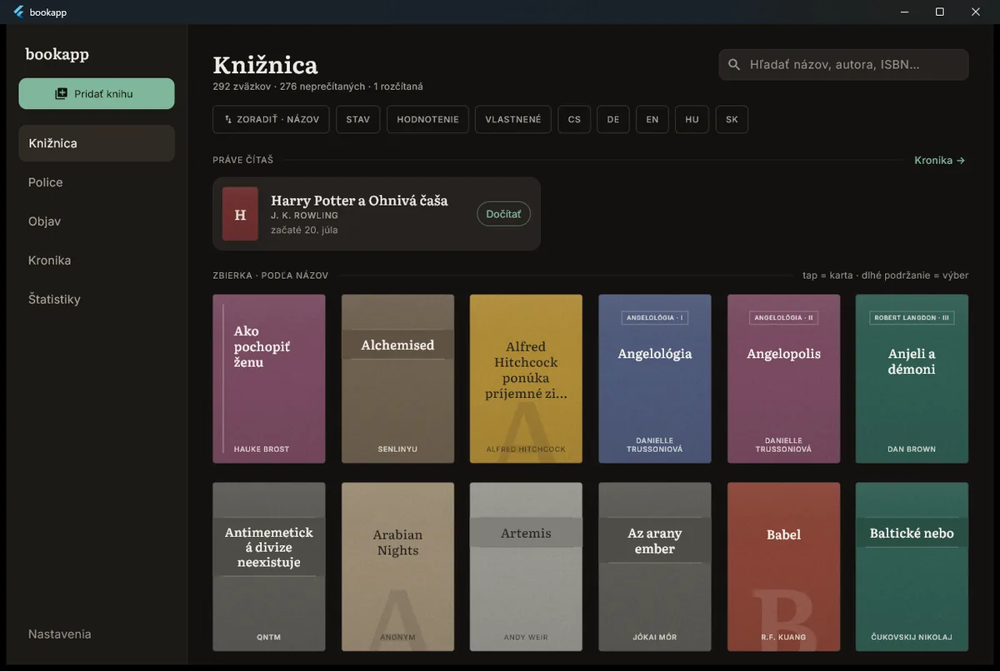

Your home library, shelf by shelf, in millimetres.
bookapp models every shelf, cabinet, drawer and book at real size. Before you buy a book or a bookcase, it tells you whether it fits and exactly where.
Download the betaWhat it does- Android and Windows
- free public beta
- no account, no cloud
- works offline
- English and Slovak

01
What it does
Your shelves are modelled in real millimetres. Books sit on them the way they actually sit: spine out, flat, cover forward, or turned in depth.
- Scan the ISBN
Point the phone camera at the barcode, one book or fifty in a row. bookapp fills in the title, author and cover.
- Shelves at true size
Every shelf, cell, cabinet and drawer is drawn to its own millimetres, not to a generic grid.
- What fits, and where
Before you buy a book or a new bookcase, see whether it fits and which shelf and cell it belongs on, ordered by series, author and snugness.
- Phone and PC over your Wi-Fi
Your phone and your Windows PC exchange the library directly over the local network. You choose the direction. No server.
- Works offline
Adding books, browsing shelves and tracking reading need no connection. Covers are fetched only when you ask for one.
- No account, ever
The library lives on your device. There is nothing to sign up for and nothing to lose access to.
02
Screens
Rendered from the current build with sample data. Click to open full size.



03
What it does not do yet
Said plainly, so you know before you download.
- No automatic measurement from a photo. Four methods were tested on real photos of real shelves. None was accurate enough to trust, so bookapp does not pretend. You measure a book once with a ruler, or pick its format and bookapp marks the thickness as approximate until you correct it.
- No iPhone or iPad app. Android and Windows only.
- Not in Google Play or the Microsoft Store. Direct download during the beta, until signing and licensing are settled properly.
04
Download
Version 0.1.0-beta, free. One click downloads the file. Checksums and older versions are on the releases page.
Android
Download for Android- Android warns about installing outside Google Play. Allow it for this one file.
- Open the downloaded APK and install. The APK is signed.
Windows
Download for Windows- Unzip the folder and run
bookapp.exe. - SmartScreen shows "Windows protected your PC" because the build is not code-signed yet. Click "More info", then "Run anyway".
Would you pay for a full version? The licensing question is open. One click tells us whether it is worth answering. No email, no account.
Thank you. Noted.
Tell me when a new tool lands. New tools only. No newsletter, no sharing. Reply to any mail to be removed.
Thanks. You will hear from us only when something new is live.
Could not save. Write to andrej@arling.sk.
05
Questions
Is it free?
Yes. bookapp is a free public beta for Android and Windows, with no trial limits, no paywall and no in-app purchases. Whether a paid version exists later is not decided.
Where is my data stored?
On your own device, in a local database that bookapp creates. Nothing is uploaded anywhere. If you sync a phone and a PC, the data moves directly between them over your local Wi-Fi, never through a server.
Does it need an account?
No. There is no sign-up, no login and no email required.
How do I measure books?
Measure a book once with a ruler and type in the millimetres, or pick its format (paperback, hardback) and bookapp uses a typical thickness for that format, always labelled as approximate. bookapp does not measure books from a photo; that was tested seriously and was not reliable, so it is not shipped.
Does it work on iPhone?
No, not yet. Android and Windows only.
How do I sync phone and PC?
Open bookapp on both devices on the same Wi-Fi, start a sync and choose the direction. The devices talk directly over the local network; no cloud service is involved.
06
Po slovensky
bookapp modeluje vašu domácu knižnicu v skutočných milimetroch: police, skrinky, zásuvky aj jednotlivé knihy. Vopred viete, či sa kniha zmestí a presne kam patrí. Naskenujete čiarový kód ISBN a appka si sama nájde názov, autora aj obálku. Telefón a počítač s Windows si knižnicu synchronizujú priamo cez domácu Wi-Fi, bez cloudu a bez účtu. Appka funguje aj offline a má slovenské aj anglické rozhranie.
Čo appka zatiaľ nevie: automaticky odmerať hrúbku knihy z fotky. Skúšali sme to štyrmi spôsobmi na skutočných fotkách a spoľahlivo to nefungovalo, tak to netvrdíme. Rozmer buď raz zmeriate metrom, alebo vyberiete formát knihy a appka ho označí ako približný. Verzia pre iPhone neexistuje a appka nie je v Google Play ani v Microsoft Store, počas bety sa sťahuje priamo.
Je to bezplatná verejná beta. Stiahnite, vyskúšajte, a ak niečo chýba alebo nefunguje, napíšte na andrej@arling.sk. Ak by ste si za plnú verziu zaplatili, dajte to vedieť jedným klikom vyššie.